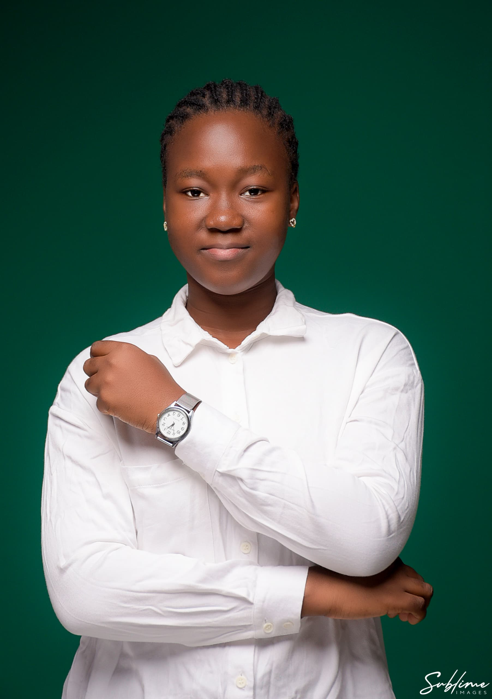

Mon Curriculum Vitæ

ZOSSOUNGBO
Gracia Ariane Maximilia
Née le 18 Septembre 2006 à Cotonou
✓PROFIL:
Autonome, sérieuse et déterminée,je m'investis avec rigueur et persévérance en mettant à profit mon sens du travail bien fait et ma capacité à relever les défis à travers ma rigueur et mon leadership.
✓CONTACT:
•Adresse:Gbégamey,Cotonou
•Email: zossoungbogracia@gmail.com
•Téléphone:+229 0167529352
✓FORMATION:
•2025: Licence 1 en Informatique de gestion et Licence 1 en langue anglaise
•2024:Baccalauréat en Sciences et Techniques(série C)
•2021: Brevet d'Etudes du Premier Cycle
•2017: Certificat d'Etudes Primaires
✓BOURSES:
•2021:Bénéficiaire de la bourse de la Fondation Vallet jusqu'à ce jour
•2024:Boursière en langue anglaise à la Faculté des Lettres, Langues, Arts et Communication de l'Université d'Abomey Calavi
•2025: Bénéficiaire de la bourse africaine de la Working to Advance African Women in STEM
✓EXPERIENCES DIVERSES:
•2021: Club Radio France International Ouidah
-1ère dauphine du concours MISS DICTEE
•2021-2022:CEG 2 de Ouidah
-Déléguée d'Etablissement
•2023-2024: ONG Femmes et Développement
-Monitrice et secrétaire au Camp des Filles Leaders
✓COMPETENCES:
•En informatique:
-Web design
-Programmation Python
-Microsoft(Word, Excel, Power Point, Publisher)
•En langues:
-Français, Anglais, Fon
✓CENTRES D'INTERET:
•Intérêts:
-Mécatronique robotique, Programmation, Intelligence Artificielle, Art Oratoire.
•Loisirs:
-Lecture, écriture, Musique, Sport, Tricotage.